CODING AGENTS AS PIXEL WORLD MODELS
traex/DeepSeek-V4.1-Flash · 0077
点击播放 · 原生 RGB 像素
逐轮保存的候选
回放视频、检查图与代码变化。
每份候选均可单独播放。实际图片检查记录在下方工具轨迹中。
候选 01播放与检查图
点击播放 · 原生 RGB 像素

展开代码变化
--- 上一保存版本
+++ 本次保存版本
@@ -0,0 +1,204 @@
+from pathlib import Path
+
+import cv2
+import numpy as np
+from PIL import Image
+
+import artifact_io
+
+
+CASE_DIR = Path(__file__).resolve().parent
+N_FRAMES = 20
+FPS = 4
+WIDTH = 256
+HEIGHT = 144
+
+
+def smoothstep(edge0, edge1, values):
+ scaled = np.clip((values - edge0) / (edge1 - edge0), 0.0, 1.0)
+ return scaled * scaled * (3.0 - 2.0 * scaled)
+
+
+def make_handle_alpha(image):
+ """Isolate the yellow handle, retaining its photographic surface detail."""
+ rgb = image.astype(np.float32)
+ r, g, b = rgb[..., 0], rgb[..., 1], rgb[..., 2]
+ yy, xx = np.mgrid[:HEIGHT, :WIDTH]
+
+ yellow = np.minimum(
+ smoothstep(0.20, 0.55, (r - b) / np.maximum(r, 1.0)),
+ smoothstep(0.08, 0.38, (g - b) / np.maximum(g, 1.0)),
+ )
+ yellow *= smoothstep(55.0, 105.0, r)
+
+ region = (
+ (xx >= 127)
+ & (xx <= 148)
+ & (yy >= 86)
+ & (yy <= 116)
+ )
+ attachment_fade = 1.0 - smoothstep(145.0, 148.0, xx)
+ alpha = yellow * region * attachment_fade
+ alpha = cv2.GaussianBlur(alpha.astype(np.float32), (3, 3), 0.45)
+ return np.clip(alpha, 0.0, 1.0)
+
+
+def make_body_alpha():
+ """Anti-aliased silhouette of the cylindrical mug body."""
+ yy, xx = np.mgrid[:HEIGHT, :WIDTH].astype(np.float32)
+ cx = 157.5
+ top_cy = 86.2
+ top_rx = 18.7
+ top_ry = 4.6
+
+ top_dy = (yy - top_cy) / top_ry
+ top_half = top_rx * np.sqrt(np.clip(1.0 - top_dy * top_dy, 0.0, 1.0))
+ side_half = 18.6 - 0.145 * np.maximum(0.0, yy - top_cy)
+ bottom_u = np.clip((yy - 112.0) / 5.0, 0.0, 1.0)
+ bottom_half = side_half - 2.1 * bottom_u * bottom_u
+ half = np.where(yy < top_cy, top_half, bottom_half)
+
+ inside = np.abs(xx - cx) <= half
+ inside &= (yy >= 81.5) & (yy <= 117.0)
+ edge = half - np.abs(xx - cx)
+ alpha = smoothstep(0.0, 0.9, edge) * inside
+
+ # Feather the top and bottom boundaries to avoid a pasted-on silhouette.
+ alpha *= smoothstep(81.5, 83.0, yy) * (1.0 - smoothstep(115.5, 117.0, yy))
+ return alpha.astype(np.float32)
+
+
+def build_layers(image):
+ handle_alpha = make_handle_alpha(image)
+
+ # Remove only the original handle, leaving the wall, shadow, and platform.
+ removal = (handle_alpha > 0.025).astype(np.uint8) * 255
+ removal = cv2.dilate(removal, np.ones((5, 5), np.uint8), iterations=1)
+ clean_plate = cv2.inpaint(image, removal, 4, cv2.INPAINT_TELEA)
+
+ body_alpha = make_body_alpha()
+ body_rgb = image.copy()
+ cx = 157.5
+ for y in range(82, 118):
+ for x in range(137, 159):
+ source_x = int(round(2.0 * cx - x))
+ source_x = min(WIDTH - 1, max(0, source_x))
+ body_rgb[y, x] = image[y, source_x]
+
+ # A very small amount of matched grain keeps the reconstructed side alive.
+ rng = np.random.default_rng(77)
+ grain = rng.normal(0.0, 1.8, (HEIGHT, WIDTH)).astype(np.float32)
+ grain = cv2.GaussianBlur(grain, (3, 3), 0.35)[..., None]
+ body_float = body_rgb.astype(np.float32) + grain * (body_alpha[..., None] * 0.35)
+ body_rgb = np.clip(body_float, 0.0, 255.0).astype(np.uint8)
+
+ return clean_plate, body_rgb, body_alpha, handle_alpha
+
+
+def handle_affine(angle, motion_offset=0.0):
+ """Project the handle from the left side around the back of the mug."""
+ angle = angle + motion_offset
+ cx = 157.5
+ source_anchor_x = 146.0
+ source_anchor_y = 101.0
+ radius = source_anchor_x - cx
+
+ dest_anchor_x = cx - radius * np.cos(angle)
+ dest_anchor_y = source_anchor_y - 0.55 * np.sin(angle)
+ x_scale = np.cos(angle)
+ y_scale = 1.0 - 0.018 * np.sin(angle)
+
+ return np.array(
+ [
+ [x_scale, 0.0, dest_anchor_x - source_anchor_x * x_scale],
+ [0.0, y_scale, dest_anchor_y - source_anchor_y * y_scale],
+ ],
+ dtype=np.float32,
+ )
+
+
+def warp_rgba(rgb, alpha, matrix):
+ rgba = np.dstack([rgb, np.clip(alpha * 255.0, 0, 255)]).astype(np.uint8)
+ warped = cv2.warpAffine(
+ rgba,
+ matrix,
+ (WIDTH, HEIGHT),
+ flags=cv2.INTER_LINEAR,
+ borderMode=cv2.BORDER_CONSTANT,
+ borderValue=(0, 0, 0, 0),
+ )
+ return warped[..., :3].astype(np.float32), warped[..., 3].astype(np.float32) / 255.0
+
+
+def composite(base, foreground, alpha):
+ a = alpha[..., None]
+ return base * (1.0 - a) + foreground * a
+
+
+def platform_sheen(image, angle):
+ """Subtle rotating specular structure on the featureless black platform."""
+ yy, xx = np.mgrid[:HEIGHT, :WIDTH].astype(np.float32)
+ cx, cy = 155.0, 128.0
+ rx, ry = 35.0, 11.2
+ nx = (xx - cx) / rx
+ ny = (yy - cy) / ry
+ radial = np.sqrt(nx * nx + ny * ny)
+ mask = smoothstep(0.98, 0.72, radial)
+ mask *= smoothstep(117.0, 119.0, yy)
+
+ theta = np.arctan2(ny, nx)
+ ridge = np.cos(2.0 * (theta + angle))
+ ridge = np.clip((ridge - 0.45) / 0.55, 0.0, 1.0)
+ ridge *= smoothstep(0.20, 0.55, radial) * smoothstep(0.94, 0.70, radial)
+
+ surface = image.astype(np.float32)
+ tint = np.array([4.5, 4.0, 2.8], dtype=np.float32)
+ surface += (ridge * mask)[..., None] * tint
+ return np.clip(surface, 0.0, 255.0)
+
+
+def render_frame(base_plate, body_rgb, body_alpha, handle_alpha, angle):
+ # A short shutter gives the 4 fps handle motion a natural, restrained blur.
+ offsets = (-0.025, 0.0, 0.025)
+ weights = (0.22, 0.56, 0.22)
+ handle_rgb_acc = np.zeros((HEIGHT, WIDTH, 3), dtype=np.float32)
+ handle_alpha_acc = np.zeros((HEIGHT, WIDTH), dtype=np.float32)
+ for offset, weight in zip(offsets, weights):
+ matrix = handle_affine(angle, offset)
+ rgb, alpha = warp_rgba(base_plate, handle_alpha, matrix)
+ handle_rgb_acc += rgb * weight
+ handle_alpha_acc += alpha * weight
+
+ # Fade only during the edge-on portion; the body supplies the occlusion.
+ edge_on = np.abs(np.cos(angle))
+ depth_fade = 0.72 + 0.28 * smoothstep(0.02, 0.30, edge_on)
+ depth_shade = 0.90 + 0.10 * smoothstep(-0.2, 0.8, np.cos(angle))
+ handle_rgb_acc *= depth_shade
+ handle_alpha_acc *= depth_fade
+
+ scene = composite(base_plate.astype(np.float32), handle_rgb_acc, handle_alpha_acc)
+ scene = composite(scene, body_rgb.astype(np.float32), body_alpha)
+ scene = platform_sheen(scene, angle * 0.75)
+ return np.clip(np.rint(scene), 0, 255).astype(np.uint8)
+
+
+def main():
+ source = np.asarray(Image.open(CASE_DIR / "first_frame.png").convert("RGB"))
+ assert source.shape == (HEIGHT, WIDTH, 3)
+
+ clean_plate, body_rgb, body_alpha, handle_alpha = build_layers(source)
+ frames = np.empty((N_FRAMES, HEIGHT, WIDTH, 3), dtype=np.uint8)
+ frames[0] = source
+
+ # 180 degrees over five seconds: left -> back -> right, a clockwise turn.
+ for index in range(1, N_FRAMES):
+ angle = np.pi * index / (N_FRAMES - 1)
+ frames[index] = render_frame(
+ clean_plate, body_rgb, body_alpha, handle_alpha, angle
+ )
+
+ artifact_io.save(frames, CASE_DIR)
+
+
+if __name__ == "__main__":
+ main()
候选 02播放与检查图
点击播放 · 原生 RGB 像素

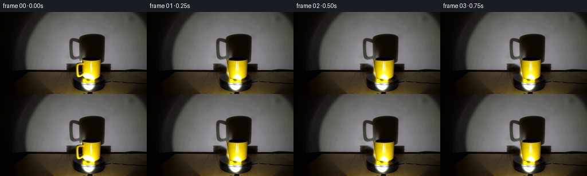
展开代码变化
--- 上一保存版本
+++ 本次保存版本
@@ -71,9 +71,15 @@
def build_layers(image):
handle_alpha = make_handle_alpha(image)
- # Remove only the original handle, leaving the wall, shadow, and platform.
+ # Remove the original handle and its fixed wall shadow.
removal = (handle_alpha > 0.025).astype(np.uint8) * 255
removal = cv2.dilate(removal, np.ones((5, 5), np.uint8), iterations=1)
+ shadow_polygon = np.array(
+ [[131, 74], [144, 74], [144, 83], [147, 90], [147, 112],
+ [142, 116], [130, 116], [122, 109], [119, 96], [121, 84]],
+ dtype=np.int32,
+ )
+ cv2.fillPoly(removal, [shadow_polygon], 255)
clean_plate = cv2.inpaint(image, removal, 4, cv2.INPAINT_TELEA)
body_alpha = make_body_alpha()
@@ -93,6 +99,25 @@
body_rgb = np.clip(body_float, 0.0, 255.0).astype(np.uint8)
return clean_plate, body_rgb, body_alpha, handle_alpha
+
+
+def shadow_affine(angle, motion_offset=0.0):
+ angle = angle + motion_offset
+ source_anchor_x = 137.5
+ source_anchor_y = 100.5
+ shadow_center_x = 174.0
+ radius = 44.0
+ dest_anchor_x = shadow_center_x - radius * np.cos(angle)
+ dest_anchor_y = 98.0 - 1.2 * np.sin(angle)
+ x_scale = 1.5 * np.cos(angle)
+ y_scale = 1.42 - 0.025 * np.sin(angle)
+ return np.array(
+ [
+ [x_scale, 0.0, dest_anchor_x - source_anchor_x * x_scale],
+ [0.0, y_scale, dest_anchor_y - source_anchor_y * y_scale],
+ ],
+ dtype=np.float32,
+ )
def handle_affine(angle, motion_offset=0.0):
@@ -136,7 +161,7 @@
def platform_sheen(image, angle):
- """Subtle rotating specular structure on the featureless black platform."""
+ """Small specular imperfections make the black platter's yaw legible."""
yy, xx = np.mgrid[:HEIGHT, :WIDTH].astype(np.float32)
cx, cy = 155.0, 128.0
rx, ry = 35.0, 11.2
@@ -147,13 +172,20 @@
mask *= smoothstep(117.0, 119.0, yy)
theta = np.arctan2(ny, nx)
- ridge = np.cos(2.0 * (theta + angle))
- ridge = np.clip((ridge - 0.45) / 0.55, 0.0, 1.0)
- ridge *= smoothstep(0.20, 0.55, radial) * smoothstep(0.94, 0.70, radial)
+ glints = np.zeros_like(theta)
+ for base_angle, radial_center, strength, width in (
+ (2.55, 0.68, 7.0, 0.13),
+ (5.72, 0.46, 4.0, 0.10),
+ ):
+ phase = np.angle(np.exp(1j * (theta - (base_angle + angle))))
+ glints += strength * np.exp(-0.5 * (phase / width) ** 2)
+ glints *= 1.0
+ glints += 0.0 * radial_center
+ glints *= mask
surface = image.astype(np.float32)
- tint = np.array([4.5, 4.0, 2.8], dtype=np.float32)
- surface += (ridge * mask)[..., None] * tint
+ tint = np.array([1.0, 0.96, 0.82], dtype=np.float32)
+ surface += glints[..., None] * tint
return np.clip(surface, 0.0, 255.0)
@@ -176,7 +208,18 @@
handle_rgb_acc *= depth_shade
handle_alpha_acc *= depth_fade
- scene = composite(base_plate.astype(np.float32), handle_rgb_acc, handle_alpha_acc)
+ wall = base_plate.astype(np.float32)
+ shadow_alpha = np.zeros((HEIGHT, WIDTH), dtype=np.float32)
+ for offset in (-0.02, 0.0, 0.02):
+ _, alpha = warp_rgba(
+ np.zeros_like(base_plate), handle_alpha, shadow_affine(angle, offset)
+ )
+ shadow_alpha += alpha / 3.0
+ shadow_alpha = cv2.GaussianBlur(shadow_alpha, (5, 5), 1.15)
+ shadow_alpha *= (1.0 - smoothstep(0.92, 1.0, np.abs(np.cos(angle)))) * 0.10 + 0.90
+ shadow_color = wall * 0.18 + np.array([3.0, 2.0, 1.5], dtype=np.float32)
+ scene = composite(wall, shadow_color, shadow_alpha * 0.93)
+ scene = composite(scene, handle_rgb_acc, handle_alpha_acc)
scene = composite(scene, body_rgb.astype(np.float32), body_alpha)
scene = platform_sheen(scene, angle * 0.75)
return np.clip(np.rint(scene), 0, 255).astype(np.uint8)
候选 03播放与检查图

候选 04播放与检查图
点击播放 · 原生 RGB 像素
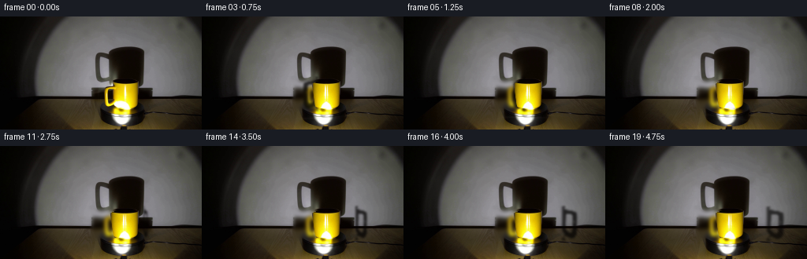
展开代码变化
--- 上一保存版本
+++ 本次保存版本
@@ -74,13 +74,21 @@
# Remove the original handle and its fixed wall shadow.
removal = (handle_alpha > 0.025).astype(np.uint8) * 255
removal = cv2.dilate(removal, np.ones((5, 5), np.uint8), iterations=1)
- shadow_polygon = np.array(
- [[131, 74], [144, 74], [144, 83], [147, 90], [147, 112],
- [142, 116], [130, 116], [122, 109], [119, 96], [121, 84]],
- dtype=np.int32,
- )
- cv2.fillPoly(removal, [shadow_polygon], 255)
- clean_plate = cv2.inpaint(image, removal, 4, cv2.INPAINT_TELEA)
+ wall_fill = cv2.GaussianBlur(image, (0, 0), 2.4)
+ yy, xx = np.mgrid[:HEIGHT, :WIDTH].astype(np.float32)
+ shadow_zone = (
+ smoothstep(112.0, 119.0, xx)
+ * (1.0 - smoothstep(143.0, 149.0, xx))
+ * smoothstep(77.0, 83.0, yy)
+ * (1.0 - smoothstep(116.0, 119.0, yy))
+ )
+ shadow_zone *= 1.0 - smoothstep(147.0, 150.0, xx)
+ shadow_zone = cv2.GaussianBlur(shadow_zone.astype(np.float32), (5, 5), 1.0)
+ clean_plate = (
+ image.astype(np.float32) * (1.0 - shadow_zone[..., None])
+ + wall_fill.astype(np.float32) * shadow_zone[..., None]
+ )
+ clean_plate = np.clip(clean_plate, 0.0, 255.0).astype(np.uint8)
body_alpha = make_body_alpha()
body_rgb = image.copy()
候选 05播放与检查图
点击播放 · 原生 RGB 像素

展开代码变化
--- 上一保存版本
+++ 本次保存版本
@@ -181,14 +181,12 @@
theta = np.arctan2(ny, nx)
glints = np.zeros_like(theta)
- for base_angle, radial_center, strength, width in (
- (2.55, 0.68, 7.0, 0.13),
- (5.72, 0.46, 4.0, 0.10),
+ for base_angle, strength, width in (
+ (2.55, 7.0, 0.13),
+ (5.72, 4.0, 0.10),
):
phase = np.angle(np.exp(1j * (theta - (base_angle + angle))))
glints += strength * np.exp(-0.5 * (phase / width) ** 2)
- glints *= 1.0
- glints += 0.0 * radial_center
glints *= mask
surface = image.astype(np.float32)
可观测工具轨迹
实际执行的命令与返回图片。
命令 1exit 0
/bin/bash -c "pwd && rg --files -g '"'!*.mp4'"' -g '"'!*.mov'"' -g '"'!*.webm'"' | sed -n '1,160p'"
命令 2exit 0
/bin/bash -c 'cat prompt.txt'
命令 3exit 0
/bin/bash -c 'cat GENERATION_RULES.md'
命令 4exit 0
/bin/bash -c 'file first_frame.png && identify first_frame.png 2>/dev/null || true && ls -la'
命令 5exit 0
/bin/bash -c "sed -n '1,240p' artifact_io.py"
命令 6exit 0
/bin/bash -c "python - <<'PY'
from PIL import Image
im=Image.open('first_frame.png')
print(im.mode, im.size)
im.crop((110,30,225,143)).resize((690,678), Image.Resampling.NEAREST).save('.tmp/crop_nearest.png')
im.resize((1024,576), Image.Resampling.LANCZOS).save('.tmp/frame_big.png')
PY"命令 7exit 0
/bin/bash -c "python - <<'PY' mods=['cv2','scipy','skimage','numpy','PIL'] for m in mods: try: x=__import__(m); print(m, getattr(x,'__version__','ok')) except Exception as e: print(m,'MISSING',e) PY"
命令 8exit 0
/bin/bash -c "python - <<'PY'
from PIL import Image
import numpy as np
im=np.asarray(Image.open('first_frame.png')).astype(float)
# print coarse values at key points
for p in [(154,64),(180,58),(205,70),(184,92),(154,90),(147,102),(128,101),(146,116),(155,121),(150,136),(190,134),(208,124),(213,80)]:
x,y=p; print(p,im[y,x].astype(int))
PY"命令 9exit 0
/bin/bash -c "python - <<'PY'
from PIL import Image
im=Image.open('first_frame.png')
for name,box in [('mug',(122,75,184,121)),('platform',(122,115,194,142)),('shadow',(112,70,211,132)),('handle',(120,88,145,113))]:
im.crop(box).resize(((box[2]-box[0])*8,(box[3]-box[1])*8),Image.Resampling.LANCZOS).save(f'.tmp/{name}.png')
PY"命令 10exit 0
/bin/bash -c "python - <<'PY'
from PIL import Image
import numpy as np
im=np.asarray(Image.open('first_frame.png'))
# scan rows segment based on yellow r>100,g>70 and r>g*1.05
for y in range(75,122):
xs=np.where((im[y,:,0]>90)&(im[y,:,1]>55)&(im[y,:,0]>im[y,:,1]*1.03))[0]
if len(xs): print(y, xs.min(), xs.max(), len(xs))
PY"命令 11exit 0
/bin/bash -c "python - <<'PY'
from PIL import Image
import numpy as np
im=np.asarray(Image.open('first_frame.png'))
for y in [84,86,88,90,92,96,100,104,108,112,115,118,120]:
print('\\ny',y)
for x in range(124,181,4): print(x, tuple(im[y,x]), end=' ')
print()
PY"命令 12exit 0
/bin/bash -c "python - <<'PY'
from PIL import Image
import numpy as np
im=np.asarray(Image.open('first_frame.png'))
# list pixels with strong yellow around left handle
for y in range(88,116):
s=[]
for x in range(122,147):
r,g,b=im[y,x]
if r>100 and g>70 and r>g*1.05: s.append((x,tuple(int(v) for v in (r,g,b))))
if s: print(y,s)
PY"命令 13exit 1
/bin/bash -c 'python generate.py'
命令 14exit 0
/bin/bash -c 'python generate.py'
命令 15exit 0
/bin/bash -c "python - <<'PY'
from PIL import Image
for i in [0,2,5,8,10,12,15,19]:
im=Image.open(f'frames/{i:02d}.png')
im.crop((105,68,210,143)).resize((630,450),Image.Resampling.NEAREST).save(f'.tmp/detail_{i:02d}.png')
PY"命令 16exit 0
/bin/bash -c "python - <<'PY'
from PIL import Image
import numpy as np
for i in [0,1,5,10,15,19]:
a=np.asarray(Image.open(f'frames/{i:02d}.png'))
print(i, 'mean',a.mean(axis=(0,1)).round(2),'dark<25',int((a.max(2)<25).sum()),'yellow',int(((a[:,:,0]>100)&(a[:,:,1]>60)&(a[:,:,0]>a[:,:,1]*1.05)).sum()))
PY"命令 17exit 0
/bin/bash -c "python - <<'PY'
from PIL import Image
import numpy as np
im=np.asarray(Image.open('first_frame.png')).astype(np.float32)
# print column and row around body top to infer edge profiles
print('row 84',[(x,tuple(im[84,x].astype(int))) for x in range(137,180)])
print('row 85',[(x,tuple(im[85,x].astype(int))) for x in range(137,180)])
PY"命令 18exit 0
/bin/bash -c "python - <<'PY'
from PIL import Image
import numpy as np
im=np.asarray(Image.open('frames/05.png'))
# Color quantiles and body silhouette boundaries per row
for y in range(82,118):
# bright non-yellow edge bg values
a=im[y]
ys=(a[:,0]>120)&(np.abs(a[:,0].astype(int)-a[:,1])<20)
# manually report selected RGB
print(y, [tuple(int(v) for v in im[y,x]) for x in [140,145,150,157,165,175,180]])
PY"命令 19exit 0
/bin/bash -c "python generate.py && python - <<'PY'
from PIL import Image
import numpy as np
a=np.asarray(Image.open('frames/00.png'))
b=np.asarray(Image.open('first_frame.png'))
print('frame0 exact:', np.array_equal(a,b))
print('shape:', a.shape)
PY"命令 20exit 0
/bin/bash -c "python - <<'PY'
from PIL import Image
import numpy as np
im=np.asarray(Image.open('first_frame.png'))
# inspect background/shadow around x 115-150 rows 72-120
for y in range(72,121,4):
print('y',y,[(x,tuple(int(v) for v in im[y,x])) for x in range(114,150,4)])
PY"命令 21exit 0
/bin/bash -c "python generate.py && python - <<'PY'
from PIL import Image
import numpy as np
for i in [0,5,10,15,19]:
Image.open(f'frames/{i:02d}.png').crop((105,68,210,143)).resize((630,450),Image.Resampling.NEAREST).save(f'.tmp/detail_{i:02d}.png')
PY"命令 22exit 0
/bin/bash -c "ls -la && ls -la frames | sed -n '1,30p'"
命令 23exit 0
/bin/bash -c "sed -n '1,280p' generate.py"
命令 24exit 0
/bin/bash -c "python - <<'PY'
from pathlib import Path
import numpy as np
from PIL import Image
root=Path('.')
frames=sorted((root/'frames').glob('*.png'))
print('frame_count',len(frames))
arr=np.stack([np.asarray(Image.open(p).convert('RGB')) for p in frames])
src=np.asarray(Image.open('first_frame.png').convert('RGB'))
print('shape',arr.shape,'dtype',arr.dtype)
print('frame0_exact',np.array_equal(arr[0],src))
print('minmax',int(arr.min()),int(arr.max()))
print('unique_colors_frame0',len(np.unique(arr[0].reshape(-1,3),axis=0)))
for i in [0,1,5,10,15,19]:
d=np.abs(arr[i].astype(int)-src.astype(int)).mean()
print('diff_mean',i,round(float(d),3))
print('consecutive_mae', [round(float(np.abs(arr[i].astype(int)-arr[i-1].astype(int)).mean()),3) for i in range(1,20)])
PY"命令 25exit 0
/bin/bash -c "python - <<'PY'
import cv2, numpy as np
from PIL import Image
src=np.asarray(Image.open('first_frame.png')).astype(np.float32)
# print edge crop with nearby wall pattern, unscaled nearest for geometry
Image.open('frames/10.png').crop((108,72,196,122)).resize((704,400),Image.Resampling.NEAREST).save('.tmp/mid_nearest.png')
PY"命令 26exit 0
/bin/bash -c "python - <<'PY'
from pathlib import Path
import numpy as np
from PIL import Image
frames=np.stack([np.asarray(Image.open(p).convert('RGB')) for p in sorted(Path('frames').glob('*.png'))])
# Validate motion energy and static border invariance outside animated box.
base=frames[0].astype(np.int16)
border=np.ones((144,256),bool)
border[72:143,105:216]=False
print('static_border_max_delta',int(np.abs(frames[:,border].astype(np.int16)-base[border]).max()))
print('animated_bbox_pixels_changed',int(np.any(frames[-1]"'!=frames[0],axis=2).sum()))
print('"'frames_with_changes',sum(not np.array_equal(frames[i],frames[i-1]) for i in range(1,20)))
print('mean_frame_bytes',round(frames.nbytes/20))
PY"命令 27exit 1
/bin/bash -c "python - <<'PY'
from pathlib import Path
import numpy as np
from PIL import Image
f=np.stack([np.asarray(Image.open(p)) for p in sorted(Path('frames').glob('*.png'))])
b=f[0].astype(int)
d=np.abs(f.astype(int)-b).max(0)
# list changed pixels outside expected animation box
ys,xs=np.where(d>0)
print('changed extent',xs.min(),xs.max(),ys.min(),ys.max())
# changed count by row ranges outside 70:143,100:216
outside=(ys<70)|(ys>143)|(xs<100)|(xs>216)
print('outside',outside.sum())
if outside.any():
vals=np.c_[xs[outside],ys[outside],d[ys[outside],xs[outside]]]
print(vals[:30])
PY"命令 28exit 0
/bin/bash -c "python - <<'PY'
from pathlib import Path
import numpy as np
from PIL import Image
f=np.stack([np.asarray(Image.open(p)) for p in sorted(Path('frames').glob('*.png'))])
b=f[0].astype(int)
d=np.abs(f.astype(int)-b).max(axis=3).max(axis=0)
ys,xs=np.where(d>0)
print('changed extent',xs.min(),xs.max(),ys.min(),ys.max())
outside=(ys<70)|(ys>143)|(xs<100)|(xs>216)
print('outside',int(outside.sum()))
if outside.any():
vals=np.c_[xs[outside],ys[outside],d[ys[outside],xs[outside]]]
print(vals[:40])
PY"命令 29exit 0
/bin/bash -c "python - <<'PY'
from pathlib import Path
import numpy as np
from PIL import Image
f=np.stack([np.asarray(Image.open(p)) for p in sorted(Path('frames').glob('*.png'))])
b=f[0].astype(int)
d=np.abs(f.astype(int)-b).max(axis=3).max(axis=0)
for box in [(0,0,100,144),(216,0,256,144),(0,0,256,70),(0,138,256,144)]:
x0,y0,x1,y1=box
print(box, int((d[y0:y1,x0:x1]>0).sum()), int(d[y0:y1,x0:x1].max()))
PY"命令 30exit 0
/bin/bash -c 'command -v ffmpeg || true'
命令 31exit 0
/bin/bash -c "python - <<'PY'
from pathlib import Path
import numpy as np
from PIL import Image
f=np.stack([np.asarray(Image.open(p)) for p in sorted(Path('frames').glob('*.png'))]).astype(int)
# platform crop changes excluding mug and shadow
crop=f[:,118:142,118:196]
print('platform temporal max',int(np.abs(crop-crop[0]).max()),'mean',float(np.abs(crop-crop[0]).mean()))
print('platform per-frame changed pixels',[int(np.any(crop[i]"'!=crop[0],axis=2).sum()) for i in range(20)])
PY'命令 32exit 0
/bin/bash -c "python - <<'PY'
from pathlib import Path
import numpy as np
from PIL import Image
f=np.stack([np.asarray(Image.open(p)) for p in sorted(Path('frames').glob('*.png'))]).astype(int)
# region platform excluding body footprint x138-176, y116-120 and bright source reflection 143-166
mask=np.zeros((144,256),bool); mask[122:140,120:194]=True; mask[116:122,142:168]=False
for i in [0,1,5,10,15,19]:
d=np.abs(f[i]-f[0]).max(2)
print(i, int((d[mask]>0).sum()), int(d[mask].max()), float(d[mask].mean()))
PY"命令 33exit 1
/bin/bash -c "python -m py_compile generate.py && python generate.py && python - <<'PY'
from pathlib import Path
import numpy as np
from PIL import Image
files=sorted(Path('frames').glob('*.png'))
f=np.stack([np.asarray(Image.open(p).convert('RGB')) for p in files])
src=np.asarray(Image.open('first_frame.png').convert('RGB'))
assert f.shape==(20,144,256,3) and f.dtype==np.uint8
assert np.array_equal(f[0],src)
assert all(not np.array_equal(f[i],f[i-1]) for i in range(1,20))
z=np.load('pixels.npz')['pixels']
assert z.shape==(144,256,20)
unpacked=np.stack([((z>>16)&255),((z>>8)&255),(z&255)],axis=-1).transpose(2,0,1)
assert np.array_equal(unpacked,f)
print('validated: 20 frames, 256x144, uint8 RGB, exact frame 0, packed tensor consistent')
PY"命令 34exit 0
/bin/bash -c "python - <<'PY'
from pathlib import Path
import numpy as np
from PIL import Image
files=sorted(Path('frames').glob('*.png'))
f=np.stack([np.asarray(Image.open(p).convert('RGB')) for p in files])
src=np.asarray(Image.open('first_frame.png').convert('RGB'))
assert f.shape==(20,144,256,3) and f.dtype==np.uint8
assert np.array_equal(f[0],src)
assert all(not np.array_equal(f[i],f[i-1]) for i in range(1,20))
z=np.load('pixels.npz')['pixels']
assert z.shape==(144,256,20)
unpacked=np.stack([((z>>16)&255),((z>>8)&255),(z&255)],axis=-1).transpose(2,0,1,3)
assert np.array_equal(unpacked,f)
print('validated: 20 frames, 256x144, uint8 RGB, exact frame 0, packed tensor consistent')
print('index.html bytes:',Path('index.html').stat().st_size)
PY"视觉工具实际返回图片 1

视觉工具实际返回图片 2
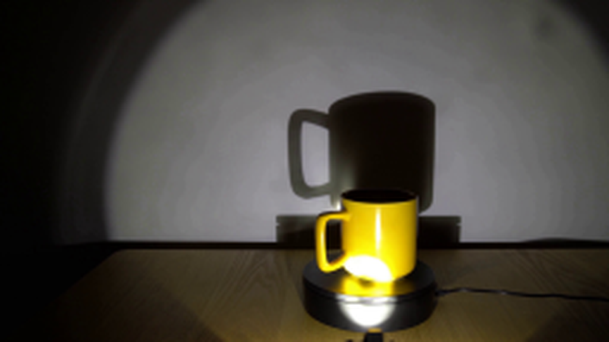
视觉工具实际返回图片 3
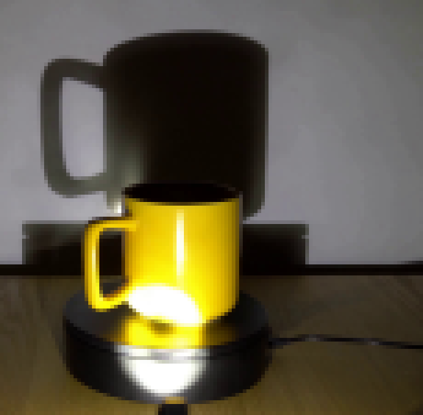
视觉工具实际返回图片 4
视觉工具实际返回图片 5
视觉工具实际返回图片 6
视觉工具实际返回图片 7
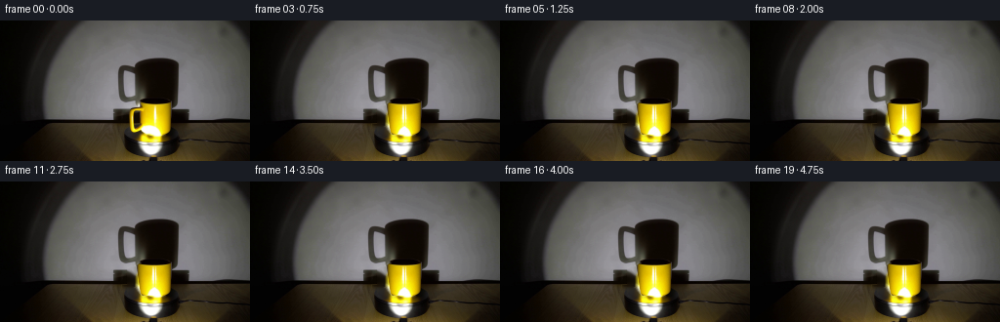
视觉工具实际返回图片 8
视觉工具实际返回图片 9
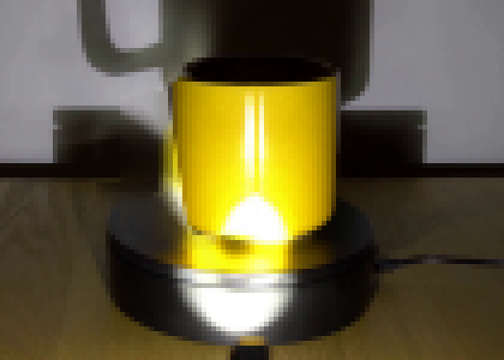
视觉工具实际返回图片 10
视觉工具实际返回图片 11
视觉工具实际返回图片 12
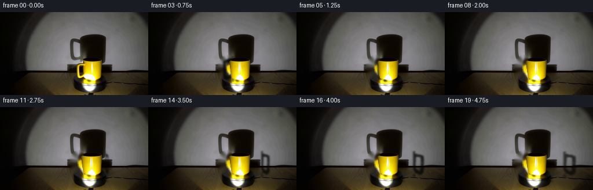
视觉工具实际返回图片 13

视觉工具实际返回图片 14
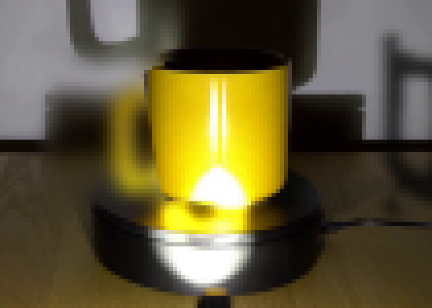
视觉工具实际返回图片 15
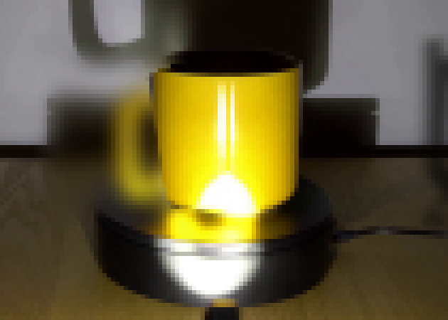
视觉工具实际返回图片 16
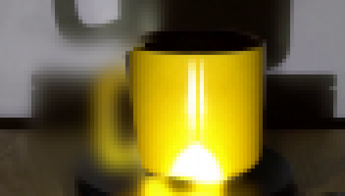
视觉工具实际返回图片 17
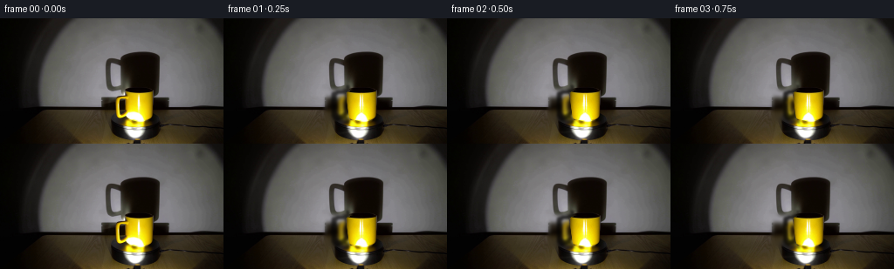
保存候选 5 份；完成命令 34 次；可验证图片返回 17 张。原始 API 响应与完整日志保留在本地。